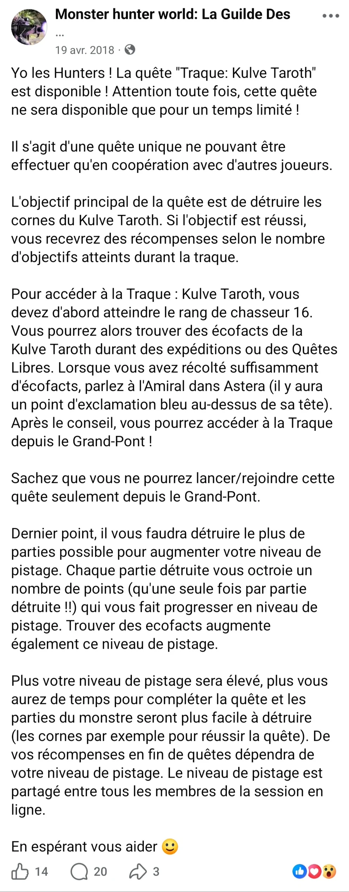

01 · INFORMER · 19 avril 2018
Kulve Taroth — Un guide fondé sur l’expérience
À l'occasion de l'arrivée de la Kulve Taroth dans Monster Hunter: World, j'ai rédigé un guide à partir de mes propres sessions de jeu, de tests approfondis et de prises de notes.
J'ai ensuite confronté mes observations aux informations officielles afin de vérifier les conditions d'accès et les détails susceptibles d'échapper à un joueur expérimenté.
Objectif : proposer un contenu fiable, accessible et utile aux chasseurs, quel que soit leur niveau de progression.
14 réactions · 20 commentaires · 3 partages
ARCHIVE ORIGINALE · CLIQUER POUR AGRANDIR ↗
